Projeto de Transfer Learning com Redes Neurais Convolucionais para detecção automatizada de pneumonia em imagens de raio-X
Trabalho Final - PIVCDesenvolver e comparar modelos de Deep Learning baseados em Transfer Learning para classificação binária de imagens de raio-X de tórax entre Normal e Pneumonia. O projeto explora diferentes estratégias de fine-tuning utilizando arquiteturas pré-treinadas no ImageNet.
Utilizamos o dataset Chest X-Ray Images (Pneumonia) do Kaggle, contendo imagens de raio-X de tórax de pacientes pediátricos organizadas em duas classes.
| Horizontal Flip | p = 0.5 |
| Rotação | ±15° |
| Brightness Jitter | ±0.2 |
| Contrast Jitter | ±0.2 |
| Normalização | ImageNet (mean/std) |
| Resolução | 224 × 224 px |
| Loss Function | BCEWithLogitsLoss |
| Class Weights | Balanceamento automático |
| Optimizer | Adam |
| LR Scheduler | ReduceLROnPlateau |
| Early Stopping | Patience = 10 |
| Seed | 42 (reprodutibilidade) |
O classificador final substituído nas redes pré-treinadas possui a seguinte arquitetura:
As técnicas abaixo foram utilizadas a partir de bibliotecas de terceiros (PyTorch, torchvision) e adaptadas especificamente para o problema de classificação de pneumonia em raio-X.
Data Augmentation é uma técnica que aplica transformações aleatórias nas imagens apenas durante o treino, aumentando artificialmente a diversidade dos dados sem coletar novas amostras. Reduz overfitting ao impedir que o modelo memorize os exemplos de treino. Cada transformação foi escolhida com base na natureza das imagens de raio-X de tórax:
Binary Cross-Entropy with Logits Loss é a função de perda padrão para classificação binária. Combina internamente a função Sigmoid com a Binary Cross-Entropy em uma única operação numericamente estável:
Adaptação ao desbalanceamento —
pos_weight: O dataset possui 3.875 casos de Pneumonia para apenas 1.341 Normais
(razão ~2.9:1). Sem correção, o modelo tende a prever sempre "Pneumonia" e ainda assim ter boa
acurácia. O parâmetro pos_weight penaliza mais os erros na classe minoritária:
Valor calculado dinamicamente no código
(compute_class_weights em utils.py) e passado ao critério a cada experimento,
garantindo que cada classe contribua igualmente para o gradiente.
Adam (Adaptive Moment Estimation) é um otimizador que mantém taxas de aprendizado adaptativas por parâmetro, combinando os benefícios do Momentum e do RMSProp. Atualiza os pesos usando estimativas do primeiro momento (média) e segundo momento (variância não centralizada) dos gradientes:
Scheduler que reduz automaticamente a taxa de aprendizado quando uma métrica monitorada para de melhorar. Implementa a estratégia de "diminuir ao estagnар": se a validation loss não melhora por patience épocas consecutivas, o LR é multiplicado por um fator de redução.
Configuração usada neste projeto: Monitorando val_loss (mode='min'), fator de redução = 0.1 (LR multiplica por 10%), paciência = 5 épocas, LR mínimo = 10⁻⁷. Isso permite que o modelo "cruze" platôs de gradiente sem travar em mínimos locais.
Early Stopping é uma técnica de regularização
que interrompe o treinamento quando a performance no conjunto de validação para de melhorar,
prevenindo overfitting. A implementação foi desenvolvida do zero na classe
EarlyStopping em utils.py, sem uso de biblioteca externa:
Isso garante que o modelo salvo seja sempre o de melhor performance na validação, não o da última época. Todos os 3 experimentos convergiram antes do limit máximo de épocas (Exp1: 11/30, Exp2: 14/50, Exp3: 16/50).
Transfer Learning é uma técnica de Deep Learning em que um modelo previamente treinado em uma tarefa de grande escala — neste projeto, classificação de 1.000 classes do ImageNet — tem seus pesos reutilizados como ponto de partida para uma nova tarefa. Em vez de treinar uma rede neural do zero (o que exigiria milhões de imagens e semanas de processamento), aproveitamos o conhecimento já adquirido pelo modelo sobre formas, texturas, bordas e padrões visuais genéricos.
No domínio médico, como imagens de raio-X, o Transfer Learning é especialmente valioso porque os datasets são tipicamente menores e mais difíceis de obter. As representações aprendidas no ImageNet (bordas, gradientes, padrões) transferem-se bem para a detecção de padrões translúcidos da pneumonia.
Todas as camadas convolucionais do backbone ficam congeladas (pesos não atualizados). Apenas o classificador final customizado é treinado. Funciona como um extrator de características fixo: a rede transforma a imagem em um vetor de features e o classificador aprende a mapear essas features para as classes do problema.
As últimas N camadas do backbone são descongeladas e têm seus pesos ajustados com um learning rate menor. As camadas finais capturam features mais específicas ao problema, enquanto as iniciais (que detectam padrões mais genéricos como bordas) permanecem intactas para preservar o conhecimento transferido.
A ResNet50 (Residual Network com 50 camadas) foi proposta por He et al. (2016) para resolver o problema de vanishing gradient em redes muito profundas. O seu mecanismo central são os blocos residuais (skip connections): em vez de aprender a transformação completa F(x), cada bloco aprende apenas o resíduo F(x) + x.
Adaptação neste projeto: A camada fully connected original (fc) foi substituída pelo classificador customizado de 3 camadas lineares com Dropout e ReLU. Foram realizados dois experimentos: Feature Extraction (todas as camadas congeladas, Exp 1) e Fine-Tuning Parcial com as últimas 10 camadas descongeladas (Exp 2).
A DenseNet121 (Densely Connected Network com 121 camadas) foi proposta por Huang et al. (2017). Ao contrário da ResNet onde a skip connection soma as features, na DenseNet cada camada recebe como entrada a concatenação de todas as saídas das camadas anteriores do mesmo bloco denso (Dense Block). Isto promove reutilização intensa de features e reduz drasticamente o número de parâmetros necessários.
Por que DenseNet121 supera ResNet50 neste problema? Com apenas ~8M de parâmetros (vs. ~25M da ResNet50), a DenseNet sofre menos de overfitting em datasets restritos. A reutilização densa de features multiescala é especialmente eficaz para capturar as opacidades translúcidas e sutis da pneumonia em raio-X, onde múltiplos níveis de abstração precisam ser combinados.
Adaptação neste projeto: A camada classifier original foi substituída pelo classificador customizado. Fine-Tuning Parcial com as últimas 20 camadas descongeladas (Exp 3), learning rate reduzido para 1×10⁻⁴ e batch size menor (16) para melhor estabilidade de gradiente.
| Modelo Base | ResNet50 |
| Estratégia | Feature Extraction |
| Camadas Descongeladas | 0 (todas congeladas) |
| Learning Rate | 0.001 |
| Batch Size | 32 |
| Épocas Treinadas | 11 / 30 |
Todas as camadas convolucionais congeladas. Apenas o classificador final é treinado.
| Modelo Base | ResNet50 |
| Estratégia | Fine-Tuning Parcial |
| Camadas Descongeladas | 10 |
| Learning Rate | 0.0001 |
| Batch Size | 32 |
| Épocas Treinadas | 14 / 50 |
Últimas 10 camadas descongeladas com learning rate menor para ajuste fino.
| Modelo Base | DenseNet121 |
| Estratégia | Fine-Tuning Parcial |
| Camadas Descongeladas | 20 |
| Learning Rate | 0.0001 |
| Batch Size | 16 |
| Épocas Treinadas | 16 / 50 |
DenseNet121 com 20 camadas descongeladas e batch size menor para melhor generalização.
A avaliação de modelos de classificação binária médica utiliza métricas derivadas da Matriz de Confusão, onde: TP = Verdadeiros Positivos (Pneumonia corretamente identificada), TN = Verdadeiros Negativos, FP = Falsos Positivos e FN = Falsos Negativos.
| Métrica | Exp 1 — ResNet50 Feature Extraction |
Exp 2 — ResNet50 Fine-Tuning |
Exp 3 — DenseNet121 Fine-Tuning |
|---|---|---|---|
| Accuracy | 84,78% | 87,34% | 91,51% |
| Precision | 94,03% | 86,08% | 92,88% |
| Sensitivity (Recall) | 80,77% | 95,13% | 93,59% |
| Specificity | 91,45% | 74,36% | 88,03% |
| F1-Score | 86,90% | 90,38% | 93,23% |
| AUC-ROC | 93,19% | 93,90% | 96,78% |
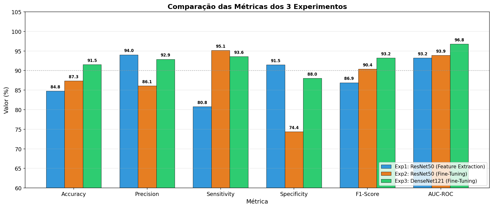
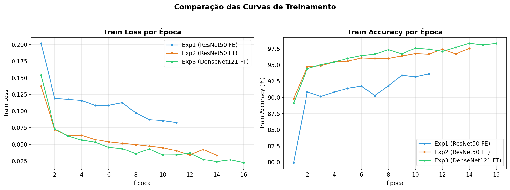
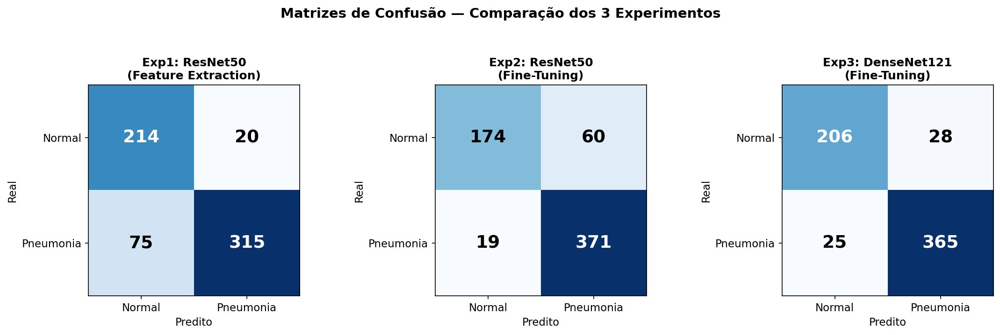
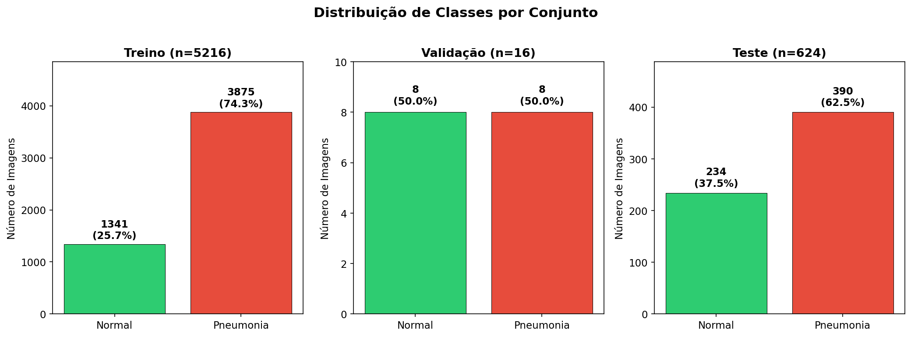
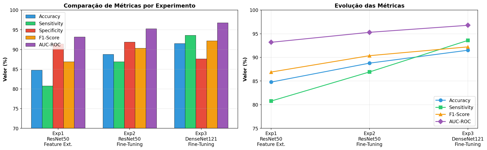
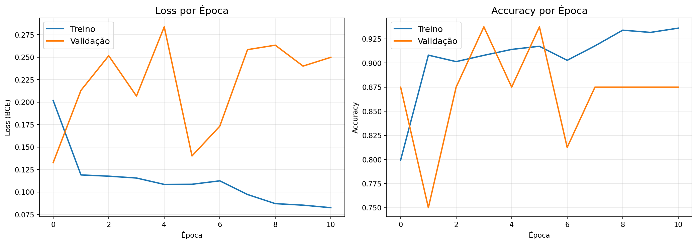
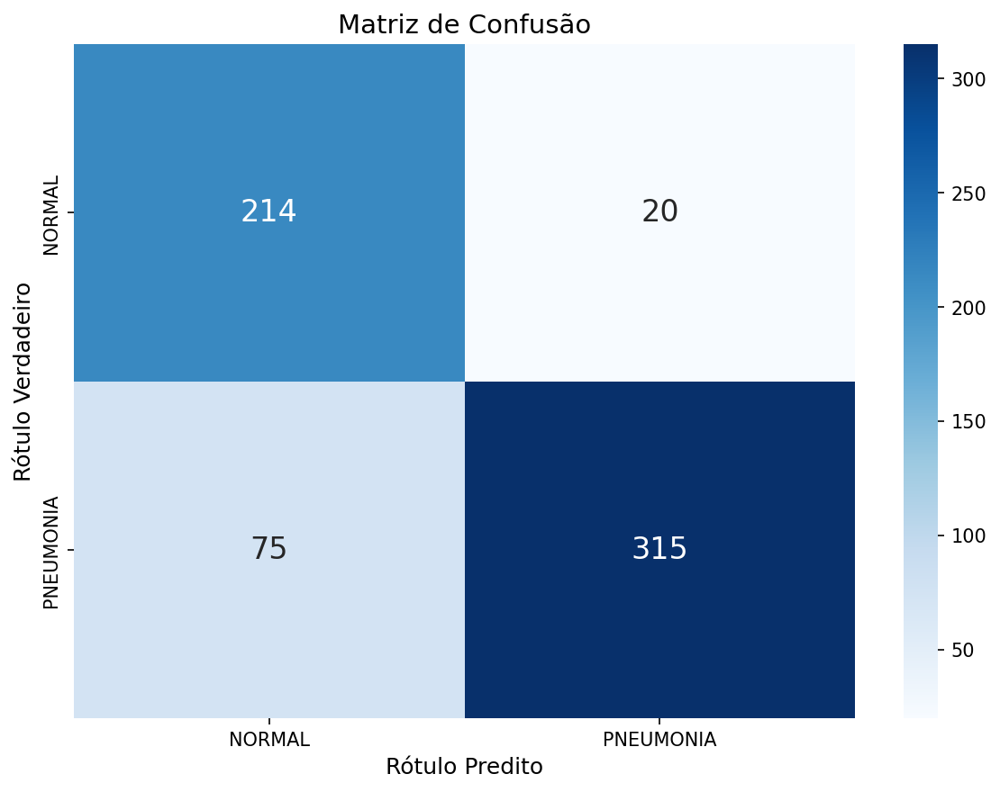
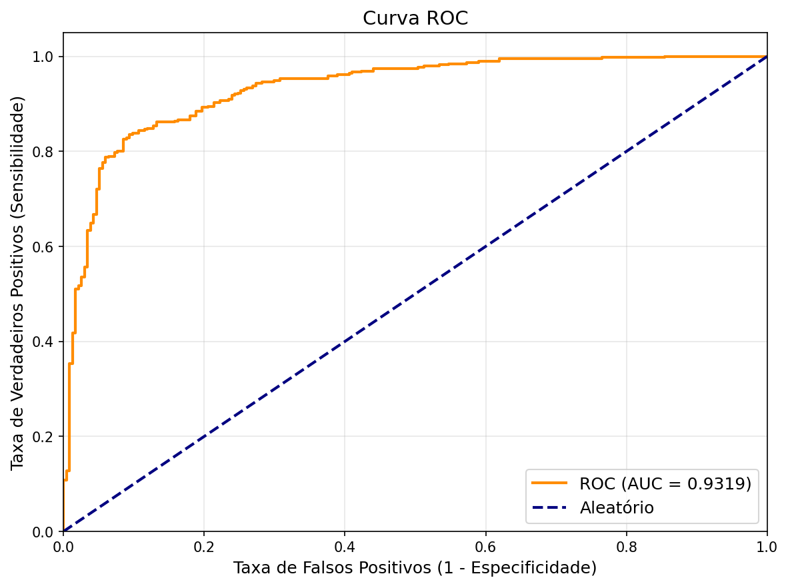
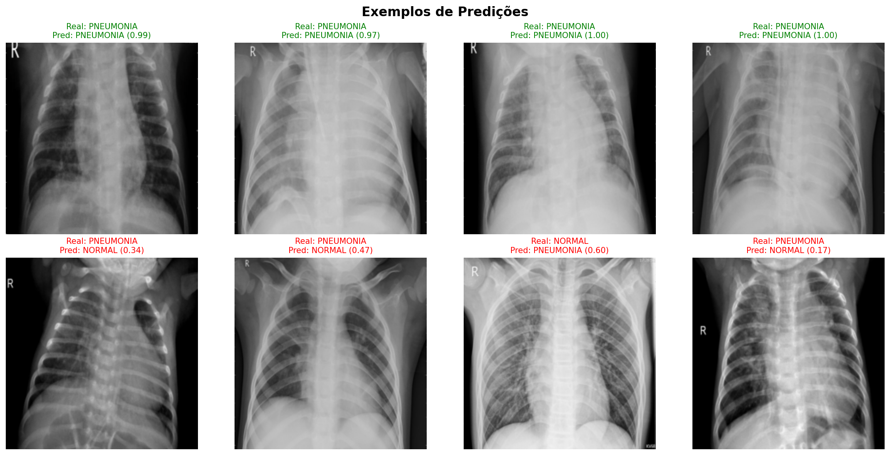
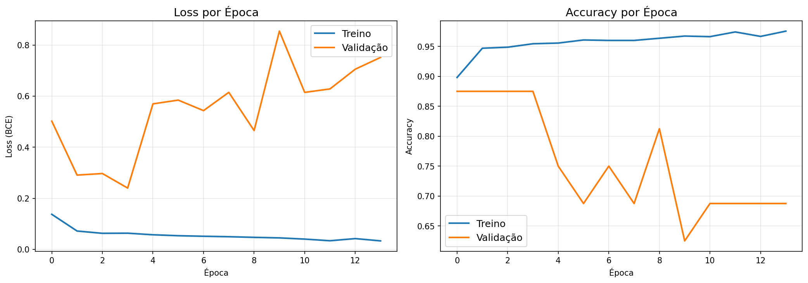
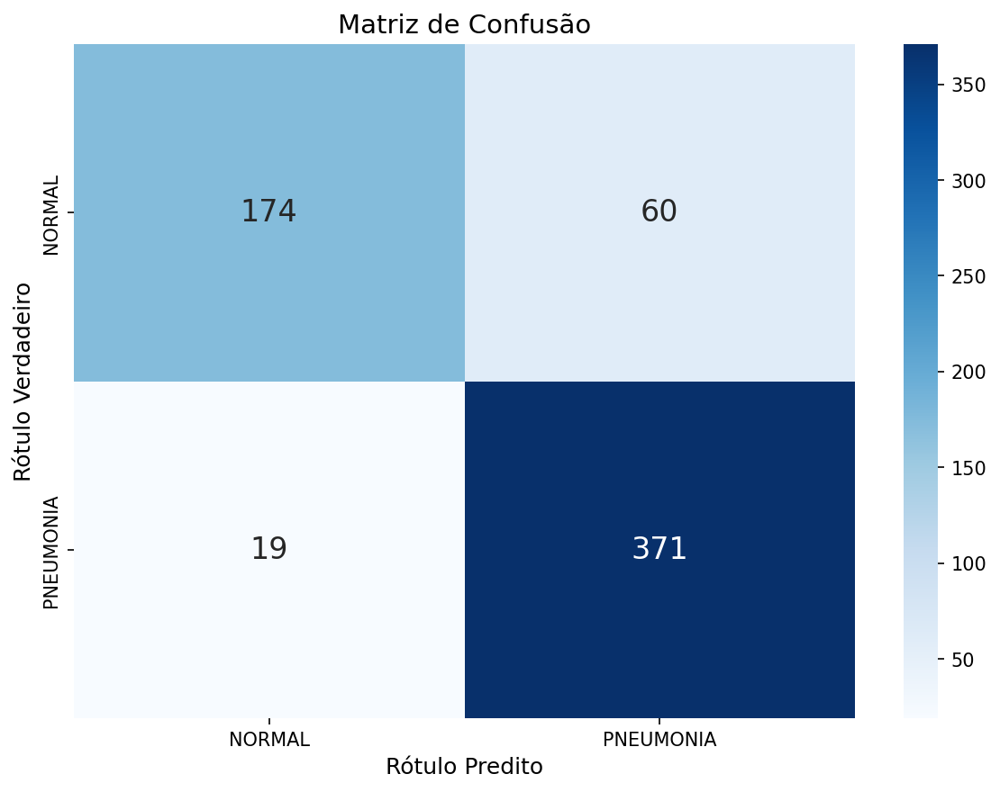
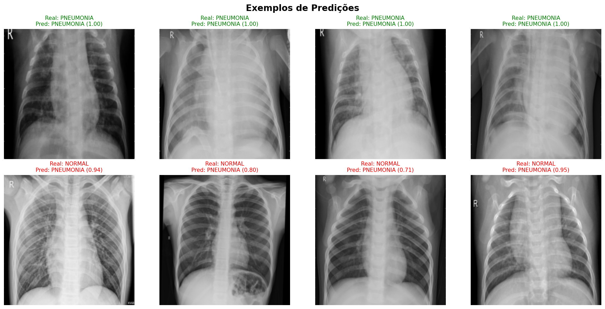
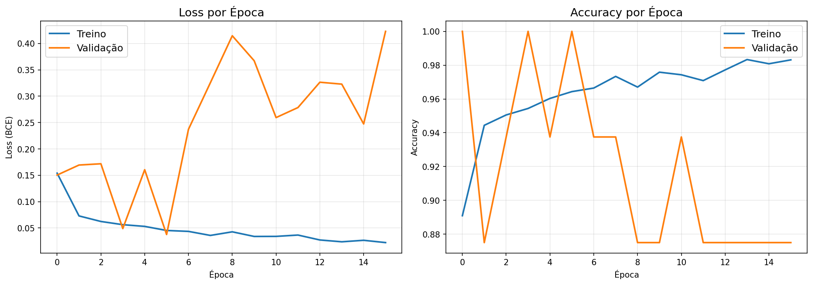
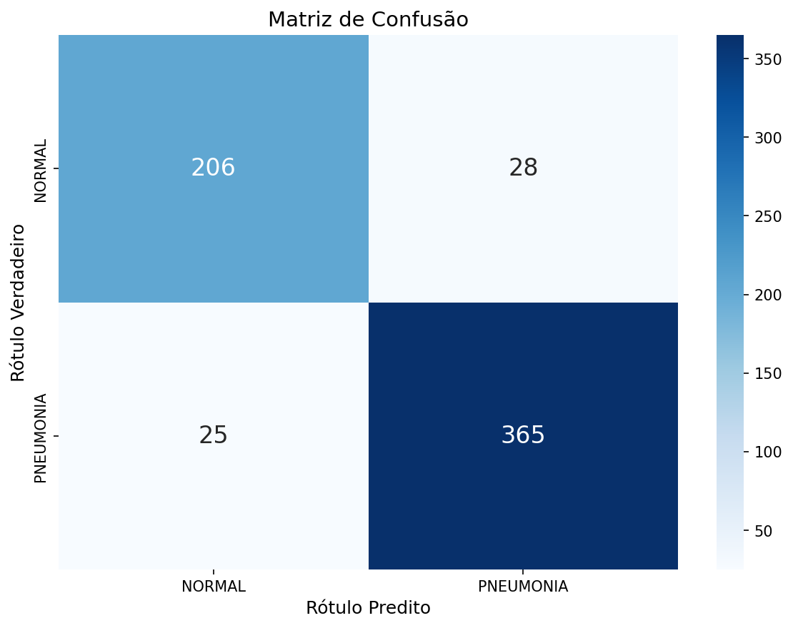
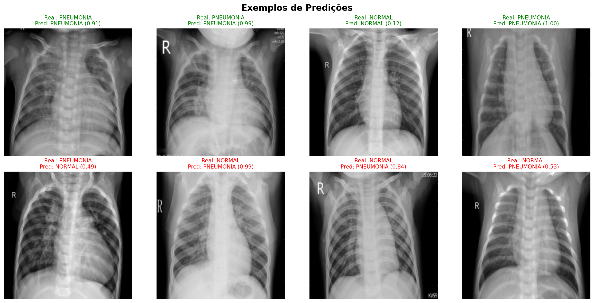
O Experimento 3 utilizando DenseNet121 com fine-tuning parcial (20 camadas descongeladas) obteve os melhores resultados gerais, alcançando 91,51% de accuracy, 93,23% de F1-Score e 96,78% de AUC-ROC. Este modelo apresentou o melhor equilíbrio entre sensibilidade (93,59%) e especificidade (88,03%), sendo o mais adequado para aplicação clínica.
Notebook Jupyter com todo o código, análises e visualizações do projeto.
Arquivo .ipynb — Abrir com Jupyter Notebook ou VS Code
Abrir com
jupyter notebook no terminal
Abrir diretamente com a extensão Jupyter
Fazer upload do .ipynb no colab.google.com